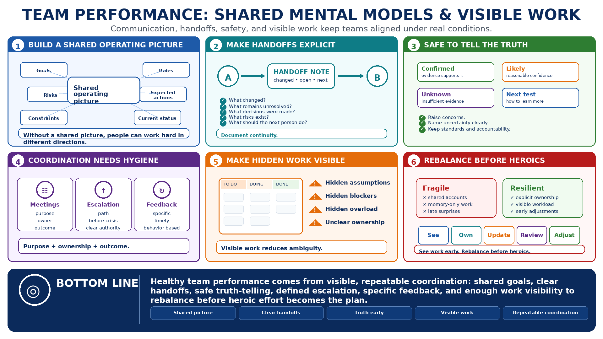

Team Performance and Communication
Connecting to LMS... Progress: in progress

Narration
Team performance depends on shared mental models. People need a common understanding of goals, roles, constraints, current status, risks, and expected actions. Without that shared picture, individuals may work hard in different directions. Communication is not just information exchange; it is how a team keeps its operating picture aligned.
Clear handoffs and defined responsibilities reduce hidden work. A good handoff explains what changed, what remains unresolved, what decisions were made, what risks exist, and what the next person should do. Documentation supports continuity when people are absent, tired, new to the work, or operating across time zones. Work that exists only in someone's head is fragile.
Psychological safety at a practical level means people can raise concerns, admit uncertainty, ask for help, and report mistakes without being punished for honesty. It does not mean avoiding standards. It means the team can surface reality early enough to respond. High-performing teams make it safe to tell the truth and expected to improve the work.
Meeting hygiene, escalation paths, and feedback culture all matter. Meetings should have purpose, ownership, and outcomes. Escalation paths should be clear before a crisis. Feedback should be specific, timely, and tied to behavior. The goal is to make team performance less dependent on heroic individuals and more dependent on visible, repeatable coordination.
Healthy teams also make work visible. Hidden assumptions, hidden blockers, and hidden overload create performance risk. Shared boards, written decisions, concise updates, and explicit ownership reduce ambiguity. When the team can see the work, it can rebalance priorities before individuals have to compensate through heroic effort.